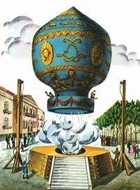
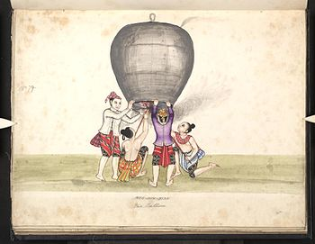
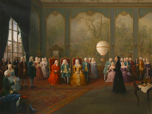

Aerostatos Contemporâneas de Santos Dumont
O Balão dos Irmãos Montgolfier
Imagem conceitual de um voo com amarras do Montgolfier.
O balão Montgolfier foi confeccionado pelos irmãos Montgolfier, filhos de um fabricante de papel. O balão foi feito com três camadas de papel em seu interior. Na época de Dumont, Montgolfier era um dos principais balões a ar quente, também foi uma grande inovação em sua época.
Lanternas de Kongming
As "Lanternas de Kongming" não são nada mais que aerostatos* de papel. Essas lanternas em específico foi criada na China no século III a.c, e foi pelo estrategista militar Zhuge Liang. No entanto, apesar de ter tido sua origem na China, esse tipo de balão viajou o mundo de certa forma e também é usado em diversas celebrações de outras culturas além da Oriental. Esse tipo de balão sempre atriu Antônio Santos Dumont na sua infância.
*Aerostatos são aeronaves mais leves que o ar.
Aerostato de Gusmão
Imagem de Gusmão mostrando seu projeto na corte real.
Bartolomeu de Gusmão foi um inventor nascido no ano de 1685 que fez certos protótipos de balões para fazer experiências na corte real, onde, apesar de ser o palco de alguns de seus erros, também foi o local onde a ascenção do balão ocorreu perfeitamente. Após seus testes na corte real, Gusmão ainda testou o voo do balão de diferentes tamanhos etc.
Leonardo Matias de Carvalho Matos
IFSP-Guarulhos
Técnico em informática para internet.